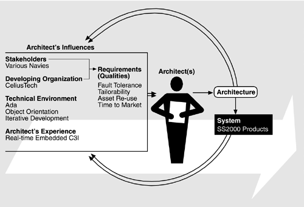

| [ Team LiB ] |
|
Chapter 15. CelsiusTech: A Case Study in Product Line Developmentwith Lisa Brownsword Note: Lisa Brownsword is a member of the technical staff at the Software Engineering Institute, Carnegie Mellon University.
This chapter relates the experience of CelsiusTech AB, a Swedish naval defense contractor that successfully adopted a product line approach to building complex software-intensive systems. Called Ship System 2000 (SS2000), their product line consists of shipboard command-and-control systems for Scandinavian, Middle Eastern, and South Pacific navies. This case study illustrates the entire Architecture Business Cycle (ABC), but especially shows how a product line architecture led CelsiusTech to new business opportunities. Figure 15.1 shows the roles of the ABC stakeholders in the CelsiusTech experience. Figure 15.1. The ABC as applied to CelsiusTech |
| [ Team LiB ] |
|